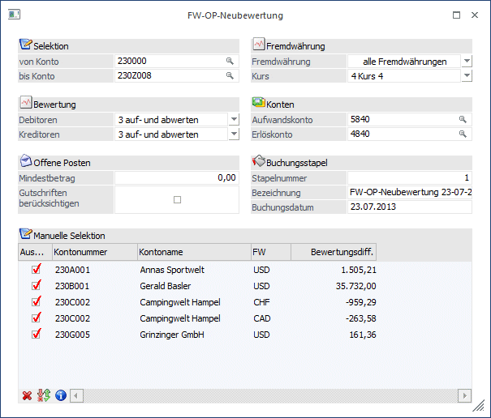
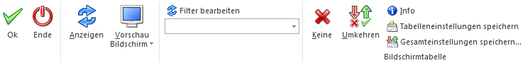
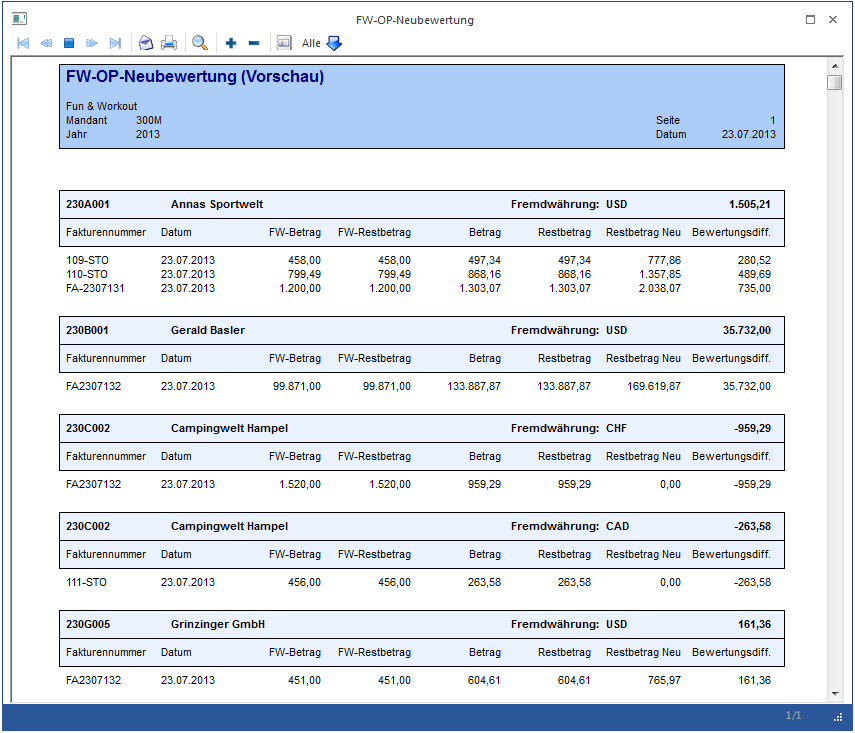
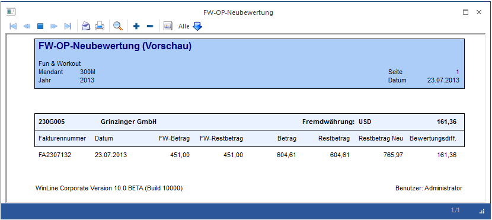

Im Menüpunkt…
1 WinLine FIBU
1 Buchen
1 FW-OP-Neubewertung
… können Fremdwährungs-OPs von selektierten Personenkonten anhand von geänderten Fremdwährungskursen automatisch neubewertet werden.
Der dabei erzeugte Buchungsstapel beinhaltet eine Buchungszeile pro Personenkonto für die Summe der Bewertungsdifferenzbeträge jeder einzelnen FW-OP. Durch diese Bewertungsbuchung (bei Debitoren eine DZ Buchung, bei Kreditoren eine KZ-Buchung) wird der Landeswährungsrestbetrag der Fremdwährungs-OP zum neuen Fremdwährungskurs auf- bzw. abgewertet.

Die folgende Felder bzw. Optionen können selektiert werden:
Ø Selektion
Einschränkung der Personenkonten, für die die Fremdwährungs-OPs bewertet werden sollen. Durch Drücken der F9-Taste können Sie nach den gewünschten Konten suchen.
Ø Bewertung
Hier kann für Debitoren und Kreditoren getrennt festgelegt werden, ob die Fakturen:
ü Nicht bewertet
Es wird kein Neubewertungs-Differenzbetrag für FW-OPs der Personenkonten errechnet.
ü Aufgewertet
Nur Aufwertungen
von FW-OP-Salden (in LW) werden berücksichtigt. Zur Einhaltung des
Höchstwertprinzips ist diese Option bei Lieferanten-OPs anzuwenden.
ü Abgewertet
Nur Abwertungen von
FW-OP-Salden (in LW) werden berücksichtigt. Zur Einhaltung des
Niederstwertprinzips ist diese Option bei Kunden-OPs anzuwenden.
ü Auf- und Abgewertet
Sowohl Auf-
als auch Abwertungen von FW-OP-Salden (in LW) werden Berücksichtigt.
Ø Offene Posten
Einschränkung der FW-OPs die berücksichtigt werden sollten:
ü Mindestbetrag
Wird hier ein
Wert eingetragen, werden nur FW-OPs berücksichtigt, deren LW-Betrag höher ist.
ü Gutschriften
berücksichtigen
Standardmäßig werden Gutschriften nicht berücksichtigt in der
Neubewertung. Aktivieren Sie diese Option, um auch Gutschriften zu
inkludieren.
Ø Fremdwährung
Zwei Parameter zur Einschränkung der FW-OPs die berücksichtigt werden sollten:
ü Fremdwährung
Hier kann gewählt
werden, ob die OPs aller Währungen oder die einer speziellen FW neu bewertet
werden sollen.
ü Kurs
Selektion einer der sechs
zur Auswahl stehenden Kurse für die Bewertung.
Ø Konten
Hier müssen die Gegenkonten für die Berichtigungsbuchung hinterlegt werden. Diese werden abhängig von der ausgewählten FW gespeichert und wieder vorgeschlagen.
ü Aufwandskonto
Konto für das
Buchen von Verlusten entstanden durch die Neubewertung.
ü Erlöskonto
Konto für das Buchen
von Gewinnen entstanden durch die Neubewertung.
Ø Buchungsstapel
In diesem Bereich können Sie Einstellungen für den Buchungsstapel treffen, der die Berichtigungsbuchungen beinhaltet:
ü Stapelnummer/-Name
Angaben zum
Stapel, der beim "OK" erzeugt wird (Stapelnummern 1-100 bzw. 500-999 sind
erlaubt).
ü Buchungsdatum
Datum für die im
Buchungsstapel enthaltenen Berichtigungsbuchungen. Außerdem wird der an diesem
Tag gültige Kurs aus der FW-Historie für die Bewertung verwendet.
Ø Manuelle Selektion
Nach Drücken des Anzeigen-Buttons wird die Tabelle mit allen betroffenen Konten inklusive dem Wert der Gesamt-Neubewertung gefüllt. Für Subkonten wird einen eigenen Eintrag angezeigt und in Folge auch eine eigene Buchung erstellt.
Mit der Checkbox "Auswahl" vor jedem Personenkonto in der Tabelle können Sie bestimmen, ob die Zeile beim Erstellen des Buchungsstapels berücksichtigt wird. Mit einem Doppelklick auf eine Zeile in der Tabelle wird die Vorschau-Auswertung für das einzelne Personenkonto angezeigt (s. "Info"-Button bzw. "Vorschau"-Button).
Buttons

Ø OK (F5)
Nach Drücken des OK-Buttons wird die FW-OP-Neubewertung entsprechend den getätigten Angaben ausgeführt und der Buchungsstapel erzeugt.
Ø Ende
Das Fenster wird geschlossen und die Selektionen und Einstellungen verworfen.
Ø Anzeigen
Wenn Sie alle gewünschten Einschränkungen eingestellt haben, klicken Sie auf den Anzeige-Button, um die Tabelle im Bereich "Manuelle Selektion" mit allen betroffenen Personenkonten zu befüllen.
Ø Vorschau Bildschirm/Drucker
Mit dem Vorschau-Button kann eine Liste der im Bereich "Manuelle Selektion" selektierten Konten inklusive aller betroffenen OPs wahlweise am Bildschirm angezeigt oder ausgedruckt werden.
Ø Filter bearbeiten
Hier kann der Filter - Assistent gestartet werden, um eine zusätzliche Auswahl in der manuellen Selektion vornehmen zu können.
Ø Keine (manuelle Selektion)
Es werden alle Konten deselektiert.
Ø Umkehren (manuelle Selektion)
Ihre getroffene Auswahl wird umgekehrt.
Ø Info (manuelle Selektion)
Mit diesem Button können Sie eine Liste aller betroffenen OPs für das in der Tabelle markierte Personenkonto aufrufen.
Ø Tabelleneinstellungen speichern
Die Spalten einer Tabelle können grundsätzlich an beliebige Positionen verschoben, bzw. in der Breite entsprechend angepasst werden. Durch Anwahl des Buttons "Tabelleneinstellungen speichern" werden die Einstellungen benutzerspezifisch gespeichert und bei dem nächsten Aufruf des Programmpunktes wieder vorgeschlagen.
Ø Gesamteinstellungen speichern
Im Gegensatz zu "Tabelleneinstellungen speichern" können mit "Gesamteinstellungen speichern" mehrere Tabellenaufbauten gespeichert und nach Wunsch geladen werden. Zusätzlich werden Sonderfunktionen der Tabelle (z.B. "Spalte gruppieren") ebenfalls bei der Speicherung bedacht.

Diese Auswertung zeigt die OP-Nummer, OP-Datum, FW-OP-Betrag, FW-OP-Restbetrag, LW-OP-Restbetrag, neue LW-OP-Restbetrag und die Bewertungsdifferenzbetrag. In dieser Hinsicht beachten Sie bitte, dass Bewertungs-"Gewinnbeträge" als negativer Betrag (d.h. im Soll) angezeigt werden.
Ist beim Gegenkonto eine Kostenart eingetragen, wird auch eine KORE-Buchung erzeugt, wobei hier nicht die KORE-Info der Faktura, sondern immer die Sammelkostenstelle aus den KORE-Parametern verwendet wird.
